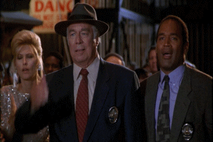
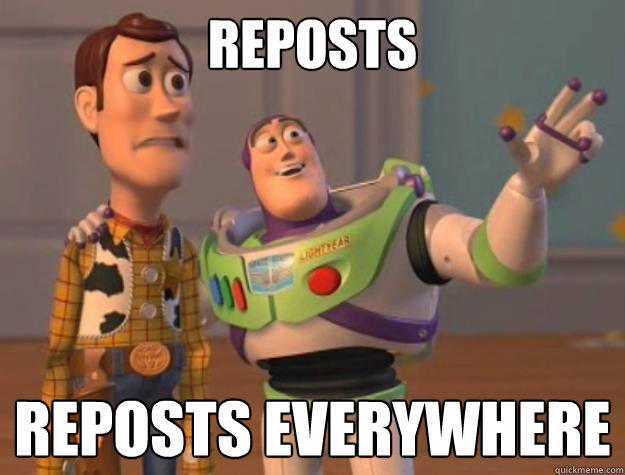

data_selfie
instagram
Likes
Messages
Search
<
B
ack
>
Likes
Messages
Search
B
ack
you really thought that converting to a
business account
would boost your visibility
nobody cares about your
likes.
they will be hidden in the next update.
you have sent over 8000 messages. most of them are
reposted memes...
You have searched for
@emrata
5 times, and yes, we know why...